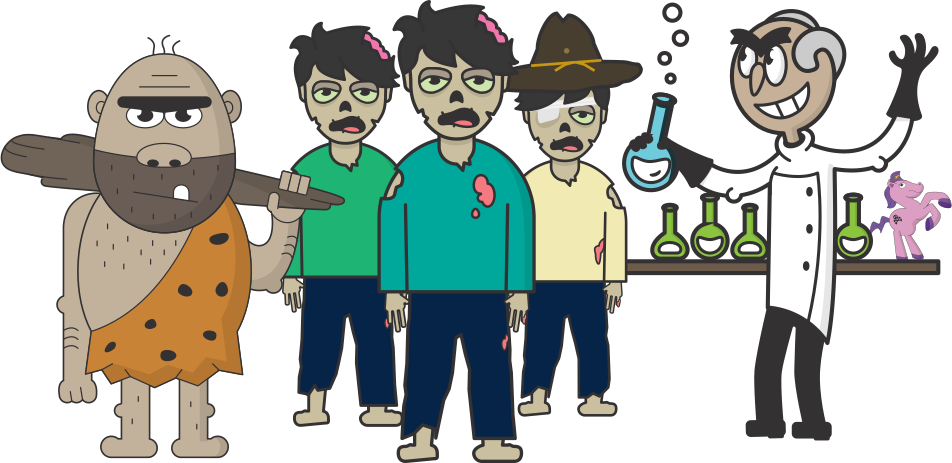
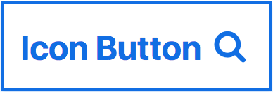
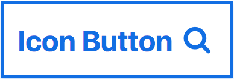
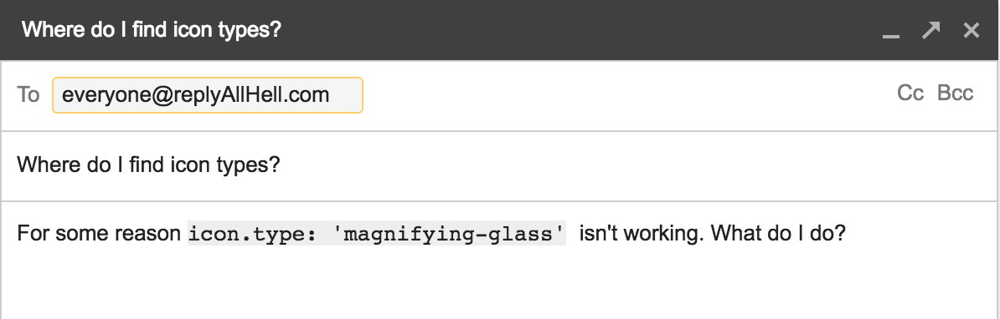
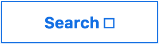

Escape the Office
Who is this Sarah person?
- Dojo 2 widgets
- accessibility
- herds cats
Typescript is a design tool
Design?
Who are you designing for?
- Your future self
- New contributors to your code
- Developers consuming your code as a library
How will they interact
with your code?

An icon button case study:
 •
 •
•
 •
Requirements:
- The icon is optional
- Alt text is necessary if the icon adds meaning
- There is a predetermined set of possible icons
Take 1:
interface ButtonProperties {
label?: text;
iconType?: string;
iconAltText?: string;
}
w(Button, {
iconType: 'search'
});
<button>
<svg role="img">
<use xlink:href="#search"></use>
</svg>
</button>
Yes, this looks right. I am done here.
Take 2:
interface ButtonProperties {
label?: string;
icon?: {
type: string;
altText: string;
};
}
Fine, I will smash my keys until this error goes away
w(Button, {
icon: {
type: 'search',
altText: 'search'
}
});
<button>
<svg role="img" aria-labelledby="search-title">
<title id="search-title">search</title>
<use xlink:href="#search"></use>
</svg>
</button>
Let's break the button interface

Email Subject: Where do I find icon types?
Body: For some reason icon.type: 'magnifying-glass' isn't working. What do I do?
What would help someone new to your code?
- IntelliSense/code hinting
- A more intuitive way to identify an icon as presentational
From earlier:
interface ButtonProperties {
label?: string;
icon?: {
type: string;
altText: string;
};
}
w(Button, {
label: 'Search',
icon: {
type: 'magnifying-glass',
altText: 'search'
}
});

<button>
Search
<svg role="img" aria-labelledby="search-title">
<title id="search-title">search</title>
<use xlink:href="#magnifying-glass"></use>
</svg>
</button>
Take 3:
enum IconType {
plus = 'plus',
arrow = 'arrow',
search = 'search'
};
interface PresentationIcon {
type: IconType;
presentation: true;
}
interface ContentIcon {
type: IconType;
altText: string;
}
interface ButtonProperties {
label?: string;
icon?: PresentationIcon | ContentIcon;
}
Hmmm... one of these looks right
<button>
Search
<svg aria-hidden="true">
<use xlink:href="#search"></use>
</svg>
</button>
Flexibility vs. control
First let's talk about aria...
What is a <button>?
- An interactive element that performs an action on the page
- e.g. controlling a popup
- toggling a state
- submitting a form
- ??
typearia-expandedaria-haspopuparia-pressed- ...
Our solution:
interface ButtonProperties {
aria?: { [key: string]: string; };
popup?: boolean;
pressed?: boolean;
type?: 'submit' | 'reset' | 'button' | 'menu';
}
Back to this guy
Where do you want to preserve control?
- Creating the
<button>element - All event handlers, states, etc.
Where do you expect someone to add functionality?
- Tooltips
- Custom content
- Addons
Extension points:
- getContent(): string | HTMLElement
- renderPopupIcon(): HTMLElement
- render(): HTMLElement
Extending Button:
interface PonyButtonProperties extends ButtonProperties {
icon?: ContentIcon | PresentationIcon | Pony;
}
class PonyButton extends Button<PonyButtonProperties> {
renderIcon() {
...
}
}
Who really knows best?
Escape Challenge!
Create an interface for an optionally hidden label on a text input
Requirements
- A visible label should be able to support custom content, e.g.
<span class="required">*</span> - There must be labelling text, even if invisible
aria-labelis ignored by all common translation services- This may change
interface TextInputProperties {
label: string | HTMLElement;
labelHidden?: boolean;
}
@codingchaos • #TSConf #EscapeTheOffice